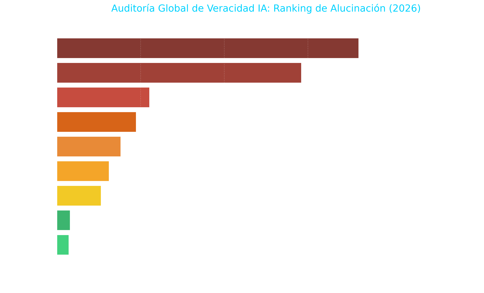

Data Analyst | AI Content Auditor | Senior Journalist
Especialista en análisis de datos y auditoría de modelos de IA con más de 20 años de experiencia en comunicación. Certificado por Google e IBM en metodologías de Ciencia de Datos, Machine Learning y Periodismo de Datos.
Análisis técnico comparativo sobre la fiabilidad fáctica de los principales modelos de lenguaje. Utilizando Python, he procesado los últimos benchmarks globales para identificar riesgos de alucinación.

*Estudio de tasas de error fáctico en arquitecturas propietarias y open-source.
Técnico de Atención a Usuarios (UOC / Ibermática): 6 años gestionando incidencias críticas y procedimientos administrativos complejos mediante sistemas de ticketing.
Periodista e Informador (RNE): Redacción y locución de informativos, aplicando rigor en la verificación de fuentes y datos.